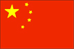

{kind=link}


![[Country map of China]](../maps/ch-map.jpg)
| China |
 |
|
|
|
|
| Introduction |
Background: For centuries China has stood as a leading civilization, outpacing the rest of the world in the arts and sciences. But in the first half of the 20th century, China was beset by major famines, civil unrest, military defeats, and foreign occupation. After World War II, the Communists under MAO Zedong established a dictatorship that, while ensuring China's sovereignty, imposed strict controls over everyday life and cost the lives of tens of millions of people. After 1978, his successor DENG Xiaoping decentralized economic decision making. Output quadrupled in the next 20 years and China now has the world's second largest GDP. Political controls remain tight even while economic controls continue to weaken.
| Geography |
Location: Eastern Asia, bordering the East China Sea, Korea Bay, Yellow Sea, and South China Sea, between North Korea and Vietnam
Geographic coordinates: 35 00 N, 105 00 E
Map references: Asia
Area:
total:
9,596,960 sq km
land:
9,326,410 sq km
water:
270,550 sq km
Area - comparative: slightly smaller than the US
Land boundaries:
total:
22,143.34 km
border countries:
Afghanistan 76 km, Bhutan 470 km, Burma 2,185 km, Hong Kong 30 km, India 3,380 km, Kazakhstan 1,533 km, North Korea 1,416 km, Kyrgyzstan 858 km, Laos 423 km, Macau 0.34 km, Mongolia 4,673 km, Nepal 1,236 km, Pakistan 523 km, Russia (northeast) 3,605 km, Russia (northwest) 40 km, Tajikistan 414 km, Vietnam 1,281 km
Coastline: 14,500 km
Maritime claims:
contiguous zone:
24 nm
continental shelf:
200 nm or to the edge of the continental margin
territorial sea:
12 nm
Climate: extremely diverse; tropical in south to subarctic in north
Terrain: mostly mountains, high plateaus, deserts in west; plains, deltas, and hills in east
Elevation extremes:
lowest point:
Turpan Pendi -154 m
highest point:
Mount Everest 8,850 m (1999 est.)
Natural resources: coal, iron ore, petroleum, natural gas, mercury, tin, tungsten, antimony, manganese, molybdenum, vanadium, magnetite, aluminum, lead, zinc, uranium, hydropower potential (world's largest)
Land use:
arable land:
10%
permanent crops:
0%
permanent pastures:
43%
forests and woodland:
14%
other:
33% (1993 est.)
Irrigated land: 498,720 sq km (1993 est.)
Natural hazards: frequent typhoons (about five per year along southern and eastern coasts); damaging floods; tsunamis; earthquakes; droughts
Environment - current issues: air pollution (greenhouse gases, sulfur dioxide particulates) from reliance on coal, produces acid rain; water shortages, particularly in the north; water pollution from untreated wastes; deforestation; estimated loss of one-fifth of agricultural land since 1949 to soil erosion and economic development; desertification; trade in endangered species
Environment - international agreements:
party to:
Antarctic-Environmental Protocol, Antarctic Treaty, Biodiversity, Climate Change, Desertification, Endangered Species, Hazardous Wastes, Law of the Sea, Marine Dumping, Ozone Layer Protection, Ship Pollution, Tropical Timber 83, Tropical Timber 94, Wetlands, Whaling
signed, but not ratified:
Climate Change-Kyoto Protocol, Nuclear Test Ban
Geography - note: world's fourth-largest country (after Russia, Canada, and US)
| People |
Population: 1,261,832,482 (July 2000 est.)
Age structure:
0-14 years:
25% (male 168,040,006; female 152,826,953)
15-64 years:
68% (male 439,736,737; female 413,454,673)
65 years and over:
7% (male 41,200,297; female 46,573,816) (2000 est.)
Population growth rate: 0.9% (2000 est.)
Birth rate: 16.12 births/1,000 population (2000 est.)
Death rate: 6.73 deaths/1,000 population (2000 est.)
Net migration rate: -0.4 migrant(s)/1,000 population (2000 est.)
Sex ratio:
at birth:
1.15 male(s)/female
under 15 years:
1.1 male(s)/female
15-64 years:
1.06 male(s)/female
65 years and over:
0.88 male(s)/female
total population:
1.06 male(s)/female (2000 est.)
Infant mortality rate: 28.92 deaths/1,000 live births (2000 est.)
Life expectancy at birth:
total population:
71.38 years
male:
69.6 years
female:
73.33 years (2000 est.)
Total fertility rate: 1.82 children born/woman (2000 est.)
Nationality:
noun:
Chinese (singular and plural)
adjective:
Chinese
Ethnic groups: Han Chinese 91.9%, Zhuang, Uygur, Hui, Yi, Tibetan, Miao, Manchu, Mongol, Buyi, Korean, and other nationalities 8.1%
Religions:
Daoist (Taoist), Buddhist, Muslim 2%-3%, Christian 1% (est.)
note:
officially atheist
Languages: Standard Chinese or Mandarin (Putonghua, based on the Beijing dialect), Yue (Cantonese), Wu (Shanghaiese), Minbei (Fuzhou), Minnan (Hokkien-Taiwanese), Xiang, Gan, Hakka dialects, minority languages (see Ethnic groups entry)
Literacy:
definition:
age 15 and over can read and write
total population:
81.5%
male:
89.9%
female:
72.7% (1995 est.)
| Government |
Country name:
conventional long form:
People's Republic of China
conventional short form:
China
local long form:
Zhonghua Renmin Gongheguo
local short form:
Zhong Guo
abbreviation:
PRC
Data code: CH
Government type: Communist state
Capital: Beijing
Administrative divisions:
23 provinces (sheng, singular and plural), 5 autonomous regions* (zizhiqu, singular and plural), and 4 municipalities** (shi, singular and plural); Anhui, Beijing**, Chongqing**, Fujian, Gansu, Guangdong, Guangxi*, Guizhou, Hainan, Hebei, Heilongjiang, Henan, Hubei, Hunan, Jiangsu, Jiangxi, Jilin, Liaoning, Nei Mongol*, Ningxia*, Qinghai, Shaanxi, Shandong, Shanghai**, Shanxi, Sichuan, Tianjin**, Xinjiang*, Xizang* (Tibet), Yunnan, Zhejiang
note:
China considers Taiwan its 23rd province; see separate entries for the special administrative regions of Hong Kong and Macau
Independence: 221 BC (unification under the Qin or Ch'in Dynasty 221 BC; Qing or Ch'ing Dynasty replaced by the Republic on 12 February 1912; People's Republic established 1 October 1949)
National holiday: National Day, 1 October (1949)
Constitution: most recent promulgation 4 December 1982
Legal system: a complex amalgam of custom and statute, largely criminal law; rudimentary civil code in effect since 1 January 1987; new legal codes in effect since 1 January 1980; continuing efforts are being made to improve civil, administrative, criminal, and commercial law
Suffrage: 18 years of age; universal
Executive branch:
chief of state:
President JIANG Zemin (since 27 March 1993) and Vice President HU Jintao (since 16 March 1998)
head of government:
Premier ZHU Rongji (since 18 March 1998); Vice Premiers QIAN Qichen (since 29 March 1993), LI Lanqing (29 March 1993), WU Bangguo (since 17 March 1995), and WEN Jiabao (since 18 March 1998)
cabinet:
State Council appointed by the National People's Congress (NPC)
elections:
president and vice president elected by the National People's Congress for five-year terms; elections last held 16-18 March 1998 (next to be held NA March 2003); premier nominated by the president, confirmed by the National People's Congress
election results:
JIANG Zemin reelected president by the Ninth National People's Congress with a total of 2,882 votes (36 delegates voted against him, 29 abstained, and 32 did not vote); HU Jintao elected vice president by the Ninth National People's Congress with a total of 2,841 votes (67 delegates voted against him, 39 abstained, and 32 did not vote)
Legislative branch:
unicameral National People's Congress or Quanguo Renmin Daibiao Dahui (2,979 seats; members elected by municipal, regional, and provincial people's congresses to serve five-year terms)
elections:
last held NA December 1997-NA February 1998 (next to be held late 2002-NA March 2003)
election results:
percent of vote - NA; seats - NA
Judicial branch: Supreme People's Court, judges appointed by the National People's Congress
Political parties and leaders: Chinese Communist Party or CCP [JIANG Zemin, General Secretary of the Central Committee]; eight registered small parties controlled by CCP
Political pressure groups and leaders: no substantial political opposition groups exist, although the government has identified the Falungong sect and the China Democracy Party as potential rivals
International organization participation: AfDB, APEC, AsDB, BIS, CCC, CDB (non-regional), ESCAP, FAO, G-77, IAEA, IBRD, ICAO, ICC, ICFTU, ICRM, IDA, IFAD, IFC, IFRCS, IHO, ILO, IMF, IMO, Inmarsat, Intelsat, Interpol, IOC, ISO, ITU, LAIA (observer), MINURSO, NAM (observer), OPCW, PCA, UN, UN Security Council, UNAMSIL, UNCTAD, UNESCO, UNHCR, UNIDO, UNIKOM, UNITAR, UNTSO, UNU, UPU, WHO, WIPO, WMO, WToO, WTrO (applicant), ZC
Diplomatic representation in the US:
chief of mission:
Ambassador LI Zhaoxing
chancery:
2300 Connecticut Avenue NW, Washington, DC 20008
telephone:
[1] (202) 328-2500
consulate(s) general:
Chicago, Houston, Los Angeles, New York, and San Francisco
Diplomatic representation from the US:
chief of mission:
Ambassador Joseph W. PRUEHER
embassy:
Xiu Shui Bei Jie 3, 100600 Beijing
mailing address:
PSC 461, Box 50, FPO AP 96521-0002
telephone:
[86] (10) 6532-3831
FAX:
[86] (10) 6532-6422
consulate(s) general:
Chengdu, Guangzhou, Shanghai, Shenyang
Flag description: red with a large yellow five-pointed star and four smaller yellow five-pointed stars (arranged in a vertical arc toward the middle of the flag) in the upper hoist-side corner
| Economy |
Economy - overview: Beginning in late 1978 the Chinese leadership has been moving the economy from a sluggish Soviet-style centrally planned economy to a more market-oriented economy but still within a rigid political framework of Communist Party control. To this end the authorities have switched to a system of household responsibility in agriculture in place of the old collectivization, increased the authority of local officials and plant managers in industry, permitted a wide variety of small-scale enterprise in services and light manufacturing, and opened the economy to increased foreign trade and investment. The result has been a quadrupling of GDP since 1978. In 1999, with its 1.25 billion people but a GDP of just $3,800 per capita, China became the second largest economy in the world after the US. Agricultural output doubled in the 1980s, and industry also posted major gains, especially in coastal areas near Hong Kong and opposite Taiwan, where foreign investment helped spur output of both domestic and export goods. On the darker side, the leadership has often experienced in its hybrid system the worst results of socialism (bureaucracy, lassitude, corruption) and of capitalism (windfall gains and stepped-up inflation). Beijing thus has periodically backtracked, retightening central controls at intervals. In late 1993 China's leadership approved additional long-term reforms aimed at giving still more play to market-oriented institutions and at strengthening the center's control over the financial system; state enterprises would continue to dominate many key industries in what was now termed "a socialist market economy". In 1995-99 inflation dropped sharply, reflecting tighter monetary policies and stronger measures to control food prices. At the same time, the government struggled to (a) collect revenues due from provinces, businesses, and individuals; (b) reduce corruption and other economic crimes; and (c) keep afloat the large state-owned enterprises, most of which had not participated in the vigorous expansion of the economy and many of which had been losing the ability to pay full wages and pensions. From 50 to 100 million surplus rural workers are adrift between the villages and the cities, many subsisting through part-time low-paying jobs. Popular resistance, changes in central policy, and loss of authority by rural cadres have weakened China's population control program, which is essential to maintaining growth in living standards. Another long-term threat to continued rapid economic growth is the deterioration in the environment, notably air pollution, soil erosion, and the steady fall of the water table especially in the north. China continues to lose arable land because of erosion and economic development. The next few years will witness increasing tensions between a highly centralized political system and an increasingly decentralized economic system.
GDP: purchasing power parity - $4.8 trillion (1999 est.)
GDP - real growth rate: 7% (1999 est.)
GDP - per capita: purchasing power parity - $3,800 (1999 est.)
GDP - composition by sector:
agriculture:
15%
industry:
35%
services:
50% (1999 est.)
Population below poverty line: 10% (1999 est.)
Household income or consumption by percentage share:
lowest 10%:
2.2%
highest 10%:
30.9% (1995)
Inflation rate (consumer prices): -1.3% (1999 est.)
Labor force: 700 million (1998 est.)
Labor force - by occupation: agriculture 50%, industry 24%, services 26% (1998)
Unemployment rate: urban unemployment roughly 10%; substantial unemployment and underemployment in rural areas (1999 est.)
Budget:
revenues:
$NA
expenditures:
$NA, including capital expenditures of $NA
Industries: iron and steel, coal, machine building, armaments, textiles and apparel, petroleum, cement, chemical fertilizers, footwear, toys, food processing, automobiles, consumer electronics, telecommunications
Industrial production growth rate: 8.8% (1999 est.)
Electricity - production: 1.16 trillion kWh (1998)
Electricity - production by source:
fossil fuel:
80.31%
hydro:
18.46%
nuclear:
1.23%
other:
0% (1998)
Electricity - consumption: 1.014 trillion kWh (1998)
Electricity - exports: 7.935 billion kWh (1998)
Electricity - imports: 89 million kWh (1998)
Agriculture - products: rice, wheat, potatoes, sorghum, peanuts, tea, millet, barley, cotton, oilseed; pork; fish
Exports: $194.9 billion (f.o.b., 1999)
Exports - commodities: machinery and equipment; textiles and clothing, footwear, toys and sporting goods; mineral fuels, chemicals
Exports - partners: US 22%, Hong Kong 19%, Japan 17%, Germany, South Korea, Netherlands, UK, Singapore, Taiwan (1999)
Imports: $165.8 billion (c.i.f., 1999)
Imports - commodities: machinery and equipment, plastics, chemicals, iron and steel, mineral fuels
Imports - partners: Japan 20%, US 12%, Taiwan 12%, South Korea 10%, Germany, Hong Kong, Russia, Singapore (1999)
Debt - external: $159 billion (1998 est.)
Economic aid - recipient: $NA
Currency: 1 yuan = 10 jiao
Exchange rates:
yuan per US$1 - 8.2793 (January 2000), 8.2783 (1999), 8.2790 (1998), 8.2898 (1997), 8.3142 (1996), 8.3514 (1995)
note:
beginning 1 January 1994, the People's Bank of China quotes the midpoint rate against the US dollar based on the previous day's prevailing rate in the interbank foreign exchange market
Fiscal year: calendar year
| Communications |
Telephones - main lines in use: 110 million (1999 est.)
Telephones - mobile cellular: 23.4 million (1998)
Telephone system:
domestic and international services are increasingly available for private use; unevenly distributed domestic system serves principal cities, industrial centers, and many towns
domestic:
interprovincial fiber-optic trunk lines and cellular telephone systems have been installed; a domestic satellite system with 55 earth stations is in place
international:
satellite earth stations - 5 Intelsat (4 Pacific Ocean and 1 Indian Ocean), 1 Intersputnik (Indian Ocean region) and 1 Inmarsat (Pacific and Indian Ocean regions); several international fiber-optic links to Japan, South Korea, Hong Kong, Russia, and Germany
Radio broadcast stations: AM 369, FM 259, shortwave 45 (1998)
Radios: 417 million (1997)
Television broadcast stations: 3,240 (of which 209 are operated by China Central Television, 31 are provincial TV stations and nearly 3,000 are local city stations) (1997)
Televisions: 400 million (1997)
Internet Service Providers (ISPs): 3 (1999)
| Transportation |
Railways:
total:
65,650 km (including 5,400 km of provincial "local" rails)
standard gauge:
62,050 km 1.435-m gauge (12,150 km electrified; 20,250 km double track)
narrow gauge:
3,600 km 0.750-m gauge local industrial lines (1998 est.)
note:
a new total of 68,000 km has been estimated for early 1999
Highways:
total:
1.21 million km
paved:
271,300 km (with at least 24,474 km of expressways)
unpaved:
938,700 km (1998 est.)
Waterways: 110,000 km navigable (1999)
Pipelines: crude oil 9,070 km; petroleum products 560 km; natural gas 9,383 km (1998)
Ports and harbors: Dalian, Fuzhou, Guangzhou, Haikou, Huangpu, Lianyungang, Nanjing, Nantong, Ningbo, Qingdao, Qinhuangdao, Shanghai, Shantou, Tianjin, Xiamen, Xingang, Yantai, Zhanjiang
Merchant marine:
total:
1,746 ships (1,000 GRT or over) totaling 16,637,023 GRT/24,552,567 DWT
ships by type:
barge carrier 2, bulk 325, cargo 840, chemical tanker 21, combination bulk 11, combination ore/oil 1, container 125, liquified gas 20, multi-functional large load carrier 5, passenger 8, passenger/cargo 46, petroleum tanker 251, refrigerated cargo 24, roll-on/roll-off 21, short-sea passenger 43, specialized tanker 2, vehicle carrier 1 (1999 est.)
Airports: 206 (1996 est.)
Airports - with paved runways:
total:
192
over 3,047 m:
18
2,438 to 3,047 m:
65
1,524 to 2,437 m:
90
914 to 1,523 m:
13
under 914 m:
6 (1996 est.)
Airports - with unpaved runways:
total:
14
1,524 to 2,437 m:
8
914 to 1,523 m:
5
under 914 m:
1 (1996 est.)
| Military |
Military branches: People's Liberation Army (PLA), which includes the Ground Forces, Navy (includes Marines and Naval Aviation), Air Force, Second Artillery Corps (the strategic missile force), People's Armed Police (internal security troops, nominally subordinate to Ministry of Public Security, but included by the Chinese as part of the "armed forces" and considered to be an adjunct to the PLA in wartime)
Military manpower - military age: 18 years of age
Military manpower - availability:
males age 15-49:
363,050,980 (2000 est.)
Military manpower - fit for military service:
males age 15-49:
199,178,361 (2000 est.)
Military manpower - reaching military age annually:
males:
10,839,039 (2000 est.)
Military expenditures - dollar figure: $12.608 billion (FY99); note - Western analysts believe that China's real defense spending is several times higher than the official figure because a number of significant items are funded elsewhere
Military expenditures - percent of GDP: 1.2% (FY99)
| Transnational Issues |
Disputes - international: boundary with India in dispute; dispute over at least two small sections of the boundary with Russia remain to be settled, despite 1997 boundary agreement; portions of the boundary with Tajikistan are indefinite; 33-km section of boundary with North Korea in the Paektu-san (mountain) area is indefinite; involved in a complex dispute over the Spratly Islands with Malaysia, Philippines, Taiwan, Vietnam, and possibly Brunei; maritime boundary dispute with Vietnam in the Gulf of Tonkin; Paracel Islands occupied by China, but claimed by Vietnam and Taiwan; claims Japanese-administered Senkaku-shoto (Senkaku Islands/Diaoyu Tai), as does Taiwan; agreement on land border with Vietnam was signed in December 1999, but details of alignment have not yet been made public
Illicit drugs: major transshipment point for heroin produced in the Golden Triangle; growing domestic drug abuse problem